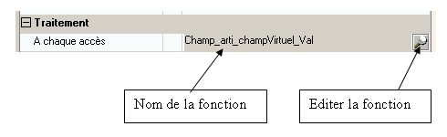

Définition
Un champ virtuel est un champ dont la valeur est calculée à chaque fois qu'il est utilisé, que ce soit dans un masque ou dans un programme Diva.
Il s'en suit que :
un champ virtuel n'a pas de zone mémoire qui lui est allouée.
un champ virtuel ne peut pas être placé en saisie dans un masque, ni se trouver comme membre gauche d'une affectation Diva.
à chaque champ virtuel correspond une fonction Diva qui est exécutée à chaque fois que le champ est utilisé. Le retour de cette fonction est la valeur du champ.
Zone virtuelle
Pour ajouter des champs virtuels au dictionnaire, vous devez tout d'abord créer une zone virtuelle dans la table. Pour cela, cliquez avec le bouton droit sur la table et sélectionnez le choix "Créer zone virtuelle".
L'éditeur crée un champ Virtuel_xxxx (xxxx étant le nom de la table). Tous les champs que vous placez ensuite sous cette zone sont des champs virtuels.
Fonction Diva
Dans les propriétés (locales) du champ virtuel se trouve le nom de la fonction qui sert à calculer la valeur du champ. Le bouton permet de passer dans l'éditeur des traitements du dictionnaire.

La fonction Diva a comme paramètre l'enregistrement courant et doit retourner la valeur du champ virtuel.
Champs virtuels utilisables en Diva
Les champs virtuels ont une propriété importante : Utilisable en Diva.
Si un champ n'est pas utilisable en Diva, à quoi sert-il ? Réponse : il peut être utilisé dans les requêtes Odbc.
La condition impérative que doit remplir un champ virtuel utilisable en Diva est : La fonction de calcul de la valeur du champ n'utilise rien d'autre que les champs de l'enregistrement courant.
Une fonction qui utilise des enregistrements publics, des Tdf (fichiers) publiques ne doit pas être utilisable en Diva.
Bien évidemment, une fonction virtuelle ne doit en aucun cas modifier l'enregistrement passé en paramètres.
Remarque
Il convient de veiller aux performances des programmes. Si un programme utilise des milliers de fois un champ virtuel, la fonction de calcul est appelée autant de fois. Dans ce cas, il est plus performant de stocker la valeur du champ virtuel dans une donnée de manoeuvre et de la calculer lorsque cela est nécessaire.
Exemple
Calcul du cout de revient total de la ventilation.
La table Mvtl contient le champ virtuel CrTotMtSign défini en 14,d0.
Comme la fonction utilise un enregistrement public Soc, cette donnée virtuelle sera définie comme non utilisable en Diva.
Public Function Int Champ_Mvtl_CrTotMtSign_Val (&Mvtl)
; Calcul du CR de la ventilation
Record gtfdd.dhsd Mvtl
1 retour 14,D0
Beginf
switch Soc.EntCodn(6)
case 1 ; Dernier CR
Retour = MVTL.StQte * MVTL.CR
case 2 ; CMP
Retour = MVTL.StQte * MVTL.CMP
case 3 ; CR réel
Retour = MVTL.StQte * MVTL.CR
default
retour = 0
endswitch
Freturn (retour)
Endf